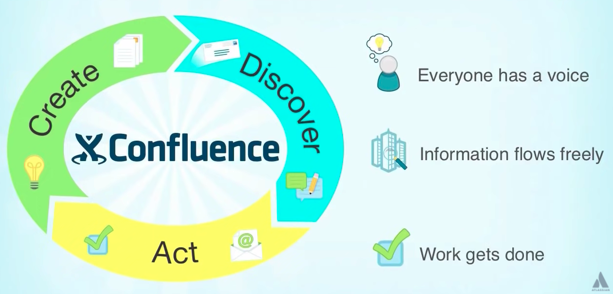
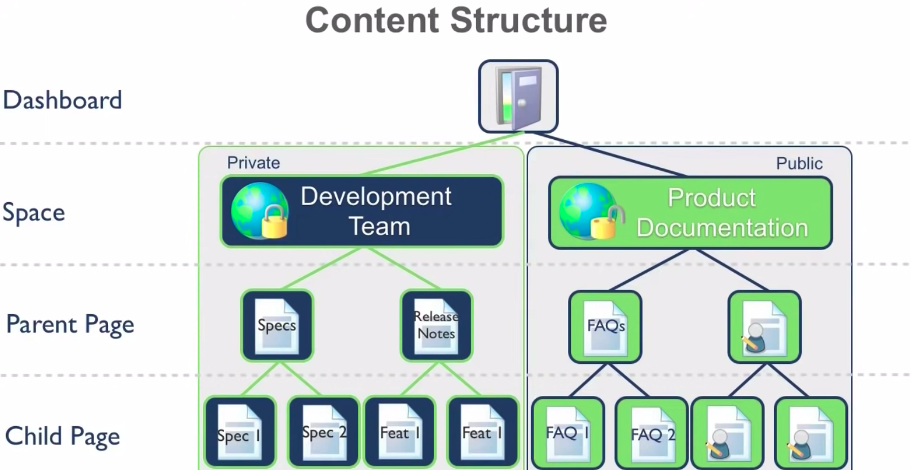
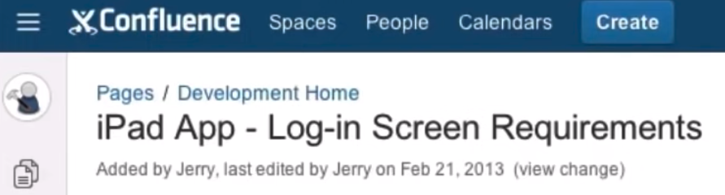
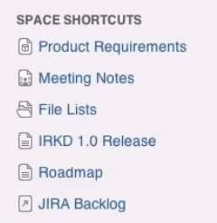

Project Management
Table of contents:
Software Project Management
Software development
Common purposes of software development
Waterfall model
Computer system requirements
Software requirements
Joint application design
Software prototype
Software design
Software design principles
Confluence
Description
Confluence vs. Jira
Collaboration Cycle
Architecture
Deployment
Recording meeting notes
Dashboard
Spaces
Space directory
Network
Breadcrumbs
Create button
Personal Space
Blueprints
Page history
User management
Sharing files
WorkBox
Labels
Email settings
RSS Feed
Helpful shortcuts
Comments and likes
Sources
Resources
Software Project Management
Software development
- The process of conceiving, specifying, designing, programming, documenting, testing, and bug fixing when creating apps, frameworks, or other software programs
- It also includes research, prototyping, modification, reuse, maintenance, and other software-related activities
- continue here: https://en.wikipedia.org/wiki/Software_development
Common purposes of software development
- Custom software: Meet specific needs of a client/organization
- Commercial software: Meet a perceived need of a set of potential users
- Personal use: A scientist writing a program to automate a mundane task
- Embedded software development: Development of software used for controlling consumer products. The development process is integrated with development of a physical product
Waterfall model
- A process in which software activities are broken down into a series of phases; each phase depends on the completion of the prior one
- Progress generally flows in one direction (down the waterfall). Conception, initiation, analysis, design, construction, testing, deployment, and maintenance
- Phases:
- Originated in manufacturing and construction but is now commonly used in software development
Computer system requirements
- Guidelines for available hardware to run a software program
- System requirements tend to increase over time due to increased demand and faster processing power
- Typically there are two sets for computer programs:
- Can be divided into two sets of requirements
- Computer architecture and OS
- Processing power
- Memory - all software exists in the RAM when it’s run
- Data storage requirements
- Display adapter - for graphics
- Peripherals - the presence of certain I/O
- Screen resolution
- Software requirements - other software
- API’s
- Hardware drivers
- Web browser
- Internet connection/speed
Software requirements
- “A condition or capability needed by a user to solve a problem or achieve an objective.” - IEEE
- Components of software requirements, also known as requirements engineering
- Elicitation: Finding and gathering requirements from stakeholders and potential users
- Analysis and negotiation: Getting a better understanding of each requirement gathered in elicitation.
- It may often include requirements triage. Now that more info is becoming known about each requirement, prioritization can be made.
- It should output a subset of smaller problems to solve
- Publishing the necessary requirements knowledge gained in an organized way
- It should allow for effective communication and allow changes to be made
- Common elements:
- Use cases
- User stories
- Functional requirements: description of the service that the software must offer
- Visual models
- Validation: confirm that the requirements match business objectives
- The spec (sometimes called Software Requirements Specification - SRS) becomes official after validation
- Management: Requirements will almost always change throughout the project. Proper management is necessary to make sure the right software is built. This overlaps with other steps of the waterfall model
- Note: there is also lots of overlap in these above stages
- Note that in many non-software projects, after the analysis phase full system modeling and design is done. UML might be used. This might be necessary, for example in setting up manufacturing. However in software most modeling is considered part of design and not requirements engineering
Joint application design
- Workshop where managers and engineers meet to reduce the chance of costly miscommunications down the road
Software prototype
- A program that shows part of the properties of the final program, for example letting users visualize an app that hasn’t yet been made
- Often results in fewer changes later, saving time and money
- Often uses wireframes - a visual representation
Software design
- Defining software solutions to a set of problems defined by the requirements
- Components:
- A user experience design using a storyboard (if there’s a UI - software is semi automated)
- A flow chart or descriptive text (if no UI - software is automated)
- It may or may be done in the context of the platform being used
- It should take into context the capabilities of the team, since there are always multiple ways to solve a problem
- Often makes use of reliable frameworks or established design patterns. This can help speed up the design and development process
- Important factors in good software design:
- Creativity
- Past experiences
- Intuition on what makes good software
- Commitment to quality
Software design principles
(Adapted from Principles of Software Development by Davis)
- Avoid tunnel vision; consider multiple approaches to satisfy requirements
- Track each design element back to the requirements analysis: this keeps organization since most design elements satisfy multiple requirements
- Don’t reinvent the wheel. Use design patterns; design time should be for new innovative ideas
- Minimize intellectual distance between the code and the problem: the code should reflect the structure of the problem domain when possible, i.e. the OOP example of modeling a car
- Design should be uniform: hash out styles, formatting, and interfaces should be defined before design work starts
- Accommodate change: Design concepts can help with this
- Don’t “bomb.” Design should degrade and terminate gently, even with wrong data or conditions
- Design is not coding, coding is not design. Design is at a much higher abstraction level. Code-level design decisions should only be made for implementation details that allow for coding of the overarching design
Confluence
Description
- A collaboration wiki tool used for helping teams collaborate and sharing knowledge
- Source of truth for information in your company
- Can be used to communicate tutorials and api’s to customers + partners
- Java-based web application used in browser
- Has features for:
- Project requirements
- Assign tasks to users
- Manage multiple calendars at once
- Meeting notes
- Document HR and legal policies
- Store other documents for sharing: strategy, design, IT documentation, wikis, best practices, etc.
- Default and custom keyboard shortcuts
- Break down team silos
- Turn conversations into action
- Organize everything into one place
- Build a culture of open teamwork
Confluence vs. Jira
- Bug and issue tracking tool that has evolved into a work management platform
- More customization options
- Can assign tickets to Kanban boards and tag others
- Confluence: Full-fledged project management and collaboration tool
- Both: Atlassian products
- Jira is Atlassian’s most popular enterprise-grade issue tracking tool
Collaboration Cycle
[a]
Architecture
- Support for external apps and databases
- SOAP and XML RPC api’s
- Java API
- License holders can get access to source code
- Plugin marketplace
Deployment
- Can be hosted on your own servers using a firewall
- Can be hosted by Atlassian using a SaaS offering
Recording meeting notes
- Original model: create a google/word doc and share that doc with everyone in attendance
- Confluence: It’s accessible in one repository by everyone. It’s editable, searchable, and viewable there
Dashboard
- All content stems from the dashboard
- Links to spaces
Spaces
- The primary way to organize content
- Accessed from the dashboard
- Rich permissions features with administrator access
- Ex: Development team (private), product documentation (public to the company, but only editable by people added)
- Each space can have unlimited parent and child pages. Organized in a simple hierarchy. Parents can always be moved; keeps in tact the child pages
- Any space can be marked as a favorite
- Spaces can be tagged. Categorization can only be done by space administrators

Space directory
- Can see all spaces - personal, favorite, by tag
- If you favorite a space, you start to see content updates of that space
Network
- Other confluence users whose activity you follow or who follow you
Breadcrumbs
- Display the current page’s location in the content hierarchy

Create button
- You can add new pages in any space for which you have the create permission
- Inserting content:
- Page title
- Apply formatting
- Bullets
- Select particular layouts
- Headers/footers
- Add tables - specify # of rows and columns
- Can merge cells, highlight, etc.
- Hyperlinks - you can link to content that lives inside confluence or to external pages
- Macros
- Images - they can also be resized to certain pixels. Effects and borders can be added
Personal Space
- A way to create content on your own and then make it as open or closed as you want
- Pages in personal spaces can easily be moved to team spaces
Blueprints
- Blank page
- File list
- Product requirements
- Customer interviews
- Blog posts
- Meeting notes
- Build-a-box
- Release checklist
- File list
- They automatically structure content and they also contain macros
- Blueprints are automatically indexed by confluence, so you can access all of one blueprint type at once

Page history
- See every previous version that ever existed, with all edit history
- You can also do diffs and reverts
User management
- Can connect to user directories including an LDAP server or an atlassian directory
- Must be an administrator to add a new user
- Restrict who can view/edit pages
Sharing files
- Use the file list blueprint to attach word or other files onto the page
- Can view file, edit in office, or remove. Can also preview files (i.e. ppt slides)
- Adding new versions are automatically updated + added to version history
WorkBox
- Aggregates your notifications - shares, likes, comments, assigned tasks, etc.
- A good way to avoid email overload
Labels
- A way to tag content: keywords or tags that can be added to pages or blog posts (as opposed to spaces)
- They’re user defined
- Two types:
- Global label: available to all users across the site
- Any user with permission to view a page can view its labels
- Any user with permission to edit a page can add a global label to a page
- Personal label: only visible to the person who created them
- Contains the prefix my: i.e. my:created to see all the pages in confluence that you have created
- Other users can’t see these labels
Email settings
- You can customize the level of notifications you get via email
RSS Feed
- You can view your confluence RSS feed from your favorite RSS reader
- Feed builder can be found in the confluence help menu
- Example: get a notification when anyone posts or comments in the development space
Helpful shortcuts
- [ - use to start autocompleting hyperlinks
- { - autocomplete for macros
- ! - autocomplete for files on the current page i.e. images
- || - pipes to insert tables. I.e. ||column1||column2||
- @ - mentions
Comments and likes
- You can get comments directly on the page where something is created (i.e. a spec) and can save a lot of time by avoiding meetings
- You can reply to specific quotes
- It’s more effective than emails
Sources
Sources
[a]https://www.youtube.com/watch?v=uhWCMlcY_Zw